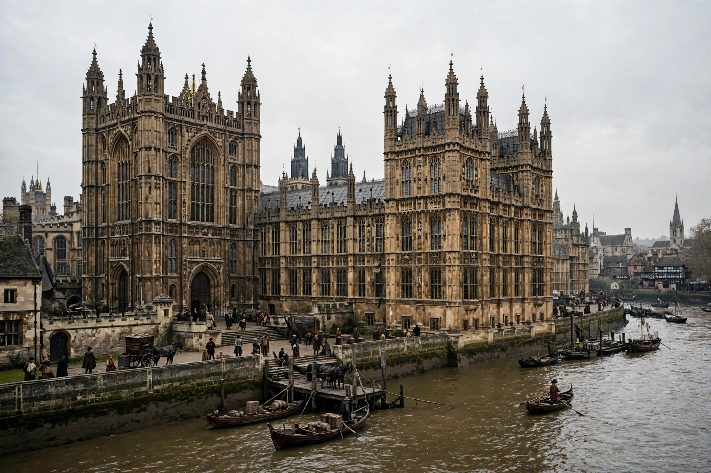

The Parliament of England was the legislature of the Kingdom of England from the 13th century until 1707, when the Acts of Union merged it with the Parliament of Scotland to form the Parliament of Great Britain.

Evolving from the Anglo-Norman royal council (curia regis), Parliament gained elected commoners after Simon de Montfort's parliament (1265) and Edward I's Model Parliament (1295). It gradually split into the House of Lords (lords spiritual and temporal) and House of Commons (knights of the shire and burgesses). Magna Carta (1215) and conflicts over taxation strengthened its role.
Struggles with the Stuart kings led to the Civil War, execution of Charles I (1649), the Commonwealth, and ultimately the Glorious Revolution (1688) and Bill of Rights 1689, establishing parliamentary sovereignty foundations.
See also: Parliament of the United Kingdom